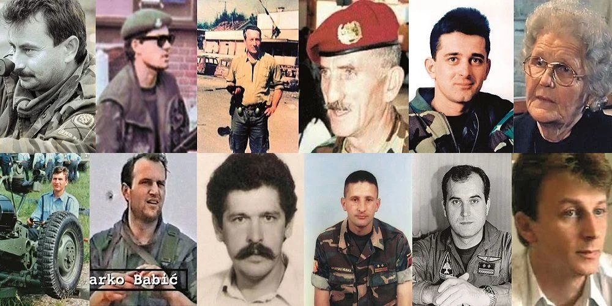
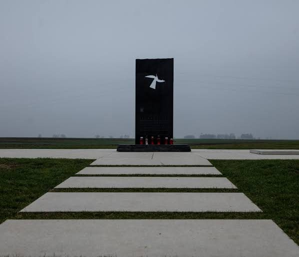
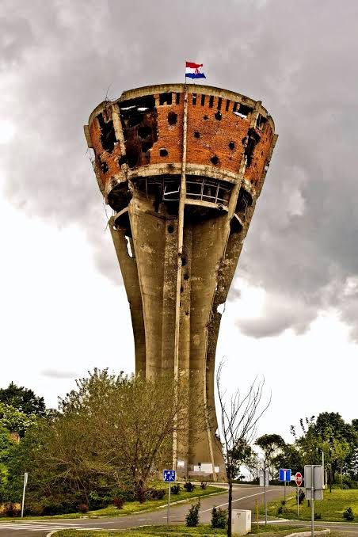

1991. - Grad Heroj
87 dana opsade, prkosa i žrtve koja je obranila Hrvatsku. Ovo je priča o gradu koji se nikada nije predao.
Uvodni tekst (o gradu):
Vukovar, barokni grad na Dunavu, u jesen 1991. godine postao je simbol otpora, hrabrosti i žrtve u Domovinskom ratu. Gotovo tri mjeseca, od 25. kolovoza do 18. studenoga 1991., oko 1.800 slabo naoružanih hrvatskih branitelja, policajaca i dragovoljaca branilo je grad od višestruko nadmoćnije Jugoslavenske narodne armije i srpskih paravojnih postrojbi.
Iako je grad pao, njegova obrana zaustavila je prodor agresora prema Zagrebu i Vinkovcima, dala Hrvatskoj dragocjeno vrijeme za organizaciju obrane i međunarodno priznanje, te zauvijek upisala Vukovar u povijest kao Grad Heroj.
"Vukovar nije samo grad. Vukovar je zavjet."

2. BITKA ZA VUKOVAR - Kronologija
Bitka za Vukovar: 25. kolovoza - 18. studenoga 1991.
Bitka za Vukovar bila je najveća i najkrvavija bitka Domovinskog rata. Grad je bio u potpunom okruženju, bez struje, vode i hrane, pod svakodnevnom topničkom i avionskom paljbom — procjenjuje se da je na grad palo i do 12.000 granata dnevno.
Kronologija:
Proljeće / ljeto 1991. - Uvod u opsadu Nakon proglašenja neovisnosti Hrvatske, napetosti u istočnoj Slavoniji rastu. Borovo Selo, Dalj i okolna sela postaju poprišta sukoba. Vukovar se organizira za obranu.
25. kolovoza 1991. - Početak općeg napada JNA pokreće masovni napad na grad iz vojarni i s položaja oko grada. Počinje 87-dnevna opsada.
Rujan 1991. - Trpinjska cesta, groblje tenkova Na Trpinjskoj cesti branitelji pod vodstvom generala Blage Zadre, zapovjednika obrane Borova Naselja, legendarnim akcijama zaustavljaju oklopne kolone JNA. Cesta dobiva naziv "groblje tenkova".
Rujan - listopad 1991. - Borbe za svaku ulicu Grad je podijeljen na punktove obrane: Sajmište, Mitnica, Borovo Naselje, Lužac, centar. Borbe se vode za svaku kuću, podrum i sklonište. U podrumu vukovarske bolnice ravnateljica dr. Vesna Bosanac i osoblje danonoćno spašavaju ranjenike.
14. rujna - 13. listopada 1991. - Bitka za kasarnu i pokušaji proboja Zapovjednici obrane Mile Dedaković Jastreb i Branko Borković Mladi Jastreb pokušavaju održati koridor prema Vinkovcima za dostavu pomoći. Koridor je presječen početkom listopada i grad ostaje potpuno odsječen.
Studeni 1991. - Pad obrane Nakon pada Bogdanovaca 10. studenoga i Lušca, obrana puca po dijelovima. 16.-17. studenoga padaju Mitnica i Borovo Naselje.
18. studenoga 1991. - Pad Vukovara Nakon 87 dana, organizirana obrana grada slomljena je. Preživjeli branitelji i civili skrivaju se u skloništima, podrumima i bolnici. Počinju progoni, zarobljavanja i zločini.
3. HEROJI VUKOVARA

Ljudi koji su branili grad
Blago Zadro (1944.-1991.) Zapovjednik obrane Borova Naselja, heroj Trpinjske ceste. Poginuo 16. listopada 1991. u Kupskoj ulici. Simbol neustrašivosti i bliskosti s vojnicima.
Mile Dedaković Jastreb i Branko Borković Mladi Jastreb Zapovjednici obrane Vukovara. Organizirali su obranu od gotovo ničega i održali je gotovo tri mjeseca.
Siniša Glavašević (1960.-1991.) Vukovarski novinar Radio Vukovara. Njegova izvješća "Priče iz Vukovara" svijetu su prenosila istinu o patnji grada. Odveden iz bolnice i ubijen na Ovčari. Njegov oproštajni tekst završava riječima: "Neka mi oproste što ovaj grad više nikada neće vidjeti."
Dr. Vesna Bosanac i osoblje bolnice U podrumu bolnice, pod granatama, liječnici, sestre i tehničari zbrinuli su tisuće ranjenika i civila. Bolnica je postala "svjetionik humanosti u paklu rata".
204. vukovarska brigada
Sastavljena od domaćih ljudi, pripadnika Zbora narodne garde, policije, HOS-a i dragovoljaca iz cijele Hrvatske. Bez teškog naoružanja, s lovnim puškama, "zoljama" i hrabrošću, zaustavili su jednu od najjačih europskih armija tog vremena.
4. MJESTA SJEĆANJA
Mjesta koja se ne zaboravljaju
1. Vukovarska bolnica

Tijekom opsade u njoj je zbrinuto preko 3.500 ranjenika. Danas je Memorijalna bolnica - mjesto sjećanja s rekonstruiranim podrumskim skloništem, gdje možete vidjeti gdje su ranjenici, liječnici i civili proveli 87 dana.
2. Ovčara

Poljoprivredno dobro 5 km jugoistočno od Vukovara. U noći s 20. na 21. studenoga 1991. pripadnici JNA i srpskih paravojnih postrojbi odveli su iz vukovarske bolnice više od 200 ranjenika, branitelja, civila i medicinskog osoblja te ih ubili u masovnom zločinu. Danas se tamo nalazi Spomen-dom Ovčara i masovna grobnica sa spomen-obilježjem. Najveći zločin Domovinskog rata.
3. Velepromet i Velepromet - logor

Mjesto sabirnog logora kroz koji je prošlo oko 10.000 zarobljenih Vukovaraca nakon pada grada.
4. Vukovarski vodotoranj

Izgrađen 1968., visok 50,3 metra. Tijekom bitke pogođen s više od 600 projektila, ali nije srušen. Sačuvan je u izvornom oštećenom stanju kao simbol hrvatskog otpora i pobjede života nad razaranjem. Na vrhu se danas vijori hrvatska zastava.
5. Memorijalno groblje žrtava Domovinskog rata

Najveće masovno groblje u Hrvatskoj s 938 bijelih križeva. Središnji križ visok 5 metara, djelo kipara Đure Kavurića. Mjesto Kolone sjećanja svakog 18. studenoga.
6. Trpinjska cesta i Kukuruzni put

Ulica kojom su prolazile tenkovske kolone i jedini put spasa kojim su Vukovarci pokušavali izaći iz okruženja prema Vinkovcima.
5. DAN SJEĆANJA - 18. studenoga
18. studenoga - Dan sjećanja na žrtve Domovinskog rata Svake godine na dan pada Vukovara, 18. studenoga, deseci tisuća ljudi iz cijele Hrvatske dolaze u Kolonu sjećanja - mirnu povorku dugu 5,5 km od vukovarske bolnice do Memorijalnog groblja. To je dan nacionalne tuge, ponosa i zajedništva. U Vukovaru se tada ne čuju govori mržnje, već imena žrtava, molitva i tišina. Dođite u Vukovar. Prošećite Kolonom sjećanja. Zapalite svijeću. Poslušajte tišinu grada koji pamti. Zašto pamtimo Vukovar? Jer Vukovar nije izgubio. Vukovar je svojom žrtvom kupio slobodu Hrvatske. Svaka oštećena fasada, svaki križ na Memorijalnom groblju i svaki kamen Vodotornja podsjeća nas na cijenu mira.